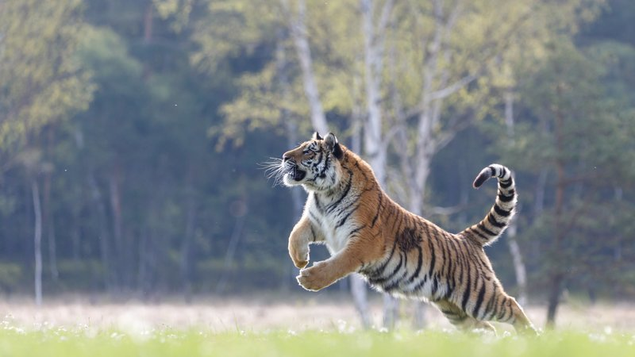

In het wild voeden tijgers zich voornamelijk met grote en middelgrote zoogdieren, met name hoefdieren met een gewicht van 60-250 kg (130-550 lb).
De meest geprefereerde soorten zijn sambar-herten, wapiti, barasingha en wilde zwijnen. Tijgers zijn in staat grotere prooien neer te halen, zoals
volwassen gaur en wilde waterbuffels, maar zullen ook opportunistisch veel kleinere prooien eten, zoals apen, pauw en andere vogels op de grond,
hazen, stekelvarkens en vissen. Ze jagen ook op andere roofdieren, waaronder honden, luipaarden, pythons, beren en krokodillen. Tijgers
jagen over het algemeen niet op volwassen volwassen Aziatische olifanten en Indische neushoorns, maar er zijn incidenten gemeld. Vaker zijn het
de meer kwetsbare kleine kalveren die worden opgevangen. Als tijgers in de buurt van mensen zijn, jagen ze soms ook op huisdieren zoals runderen,
paarden en ezels. Hoewel ze bijna uitsluitend vleesetend zijn, eten tijgers af en toe vegetatie voor voedingsvezels, zoals fruit van de slow match-boom.
In het wild voeden tijgers zich voornamelijk met grote en middelgrote zoogdieren, met name hoefdieren met een gewicht van 60-250 kg (130-550 lb).
De meest geprefereerde soorten zijn sambar-herten, wapiti, barasingha en wilde zwijnen. Tijgers zijn in staat grotere prooien neer te halen, zoals
volwassen gaur en wilde waterbuffels, maar zullen ook opportunistisch veel kleinere prooien eten, zoals apen, pauw en andere vogels op de grond,
hazen, stekelvarkens en vissen. Ze jagen ook op andere roofdieren, waaronder honden, luipaarden, pythons, beren en krokodillen. Tijgers
jagen over het algemeen niet op volwassen volwassen Aziatische olifanten en Indische neushoorns, maar er zijn incidenten gemeld. Vaker zijn het
de meer kwetsbare kleine kalveren die worden opgevangen. Als tijgers in de buurt van mensen zijn, jagen ze soms ook op huisdieren zoals runderen,
paarden en ezels. Hoewel ze bijna uitsluitend vleesetend zijn, eten tijgers af en toe vegetatie voor voedingsvezels, zoals fruit van de slow match-boom.
 Men denkt dat tijgers voornamelijk nachtelijke roofdieren zijn, maar in gebieden waar mensen afwezig zijn, hebben op afstand bestuurbare, verborgen cameravallen ze vastgelegd terwijl ze jagen bij daglicht. Ze jagen over het algemeen alleen en vallen hun prooi in een hinderlaag zoals de meeste andere katten doen, ze overweldigen ze vanuit elke hoek en gebruiken hun lichaamsgrootte en kracht om de prooi uit balans te brengen. Voor succesvolle jachten moet de tijger meestal bijna gelijktijdig op zijn prooi springen, deze omverwerpen en met zijn tanden naar de keel of nek grijpen. Ondanks hun grote omvang kunnen tijgers snelheden bereiken van ongeveer 49-65 km/u (30-40 mph), maar alleen in korte uitbarstingen; daarom moeten tijgers dicht bij hun prooi zijn voordat ze dekking breken. Als de prooi de aanwezigheid van de tijger eerder voelt, verlaat de tijger de jacht meestal in plaats van de prooi te achtervolgen of frontaal te vechten. Horizontale sprongen tot 10 m (33 ft) zijn gemeld, hoewel sprongen van ongeveer de helft van deze afstand meer typisch zijn. Een op de 2 tot 20 jachten, inclusief stalking in de buurt van potentiële prooien, eindigt in een succesvolle moord.
Bij het jagen op grotere dieren, geven tijgers er de voorkeur aan om in de keel te bijten en hun krachtige voorpoten te gebruiken om de prooi vast te houden, vaak terwijl ze hem tegelijkertijd op de grond worstelen. De tijger blijft op zijn nek geklemd totdat zijn doelwit sterft door wurging.Op deze manier zijn gaurs en waterbuffels met een gewicht van meer dan een ton gedood door tijgers die ongeveer een zesde wogen. Hoewel ze gezonde volwassenen kunnen doden, selecteren tijgers vaak de kalveren of zieken van zeer grote soorten. Gezonde volwassen prooien van dit type kunnen gevaarlijk zijn om aan te pakken, aangezien lange, sterke hoorns, poten en slagtanden allemaal dodelijk kunnen zijn voor de tijger. Geen enkel ander bestaand landroofdier neemt routinematig zo'n grote prooi alleen op zich. Bij kleinere prooien, zoals apen en hazen, bijt de tijger in de nek, waarbij vaak het ruggenmerg wordt gebroken, de luchtpijp wordt doorboord of de halsader of de gemeenschappelijke halsslagader wordt doorgesneden. Hoewel zelden waargenomen, zijn sommige tijgers geregistreerd om prooien te doden door met hun poten te vegen, die krachtig genoeg zijn om de schedels van gedomesticeerd vee te breken, en de ruggen van lippenberen te breken. Nadat ze hun prooi hebben gedood, slepen tijgers hem soms om hem in vegetatieve dekking te verbergen, meestal trekken ze hem door met hun mond naar de plaats van de moordbeet te grijpen. Ook hiervoor kan grote fysieke kracht nodig zijn. In één geval, nadat het een volwassen gaur had gedood, werd waargenomen dat een tijger het massieve karkas over een afstand van 12 m (39 ft) sleepte. Toen later 13 mannen tegelijkertijd hetzelfde karkas probeerden te slepen, konden ze het niet verplaatsen. Een volwassen tijger kan tot twee weken zonder eten, en eet dan 34 kg (75 lb) vlees in één keer. In gevangenschap worden volwassen tijgers 3 tot 6 kg (6,6 tot 13,2 lb) vlees per dag gevoerd.